NoiseGarden
A self-directed investigation of structure emerging from stochastic spatial evolution.
Cycle 02 Entropy Pump
Cycle 02 - Entropy Pump
Question
Can a simple information-theoretic regulator keep a cellular automaton out of trivial fixed points without dominating its dynamics?
Method
Grid: 64 x 64, outer ring frozen to 0.
Update: asynchronous stochastic Life-like rule with B3/S23 probability 0.8192.
Pump: every 10 generations, measure Shannon entropy across non-dead cells. If < 0.30, reseed the calmest 8x8 patch with seed_fraction 0.10.
Run: 500 generations.
Results
Mean entropy: 0.4200
Entropy range: 0.2436 - 0.5710
Pump events: 14
Files
dashboard.html - summary view
entropy_pump_summary.png - trajectory plot
entropy_log.csv, pump_log.csv - raw data
entropy_pump.py - source code
Cycle 03 Gene Pool
Cycle 03 – Gene Pool
A spatial, individual-based model of birth–death–mutation on a 128×128 toroidal grid.
Core idea
Each occupied cell holds one of the 16 possible four-bit genomes. A genome's **base fitness** is the fraction of bits equal to 1. Reproduction is local and density dependent: a parent's effective fitness is its base fitness times a crowding penalty that falls with the number of neighbouring occupants.
The question is whether selection for higher bit count can dominate, or whether spatial crowding and finite resources maintain diversity.
Files
| File | Description |
|------|-------------|
| `gene_pool.py` | Simulation source code. |
| `build_dashboard.py` | Generates `dashboard.html` from the CSV and PNG outputs. |
| `gene_pool.csv` | Time series of occupancy, unique genomes, mean fitness, and entropy. |
| `gene_pool_trajectory.png` | Four-panel trajectory plot. |
| `gene_pool_final.png` | Final spatial genome map. |
| `dashboard.html` | Self-contained HTML dashboard with embedded figures. |
| `design.md` | Original design spec. |
How to run
python cycle_03_gene_pool/gene_pool.py
python cycle_03_gene_pool/build_dashboard.py
Then open `cycle_03_gene_pool/dashboard.html`.
Key parameters
Grid: 128×128, toroidal wrap-around
8 neighbours (Moore neighbourhood)
Base mutation probability per bit: 0.03
Spontaneous death probability: 0.05
Crowding penalty: `1 - ( / 8)`
Results (seed = 7)
Final state after 1,000 generations:
Occupancy: **1.000** (saturated grid)
Unique genomes: **16 / 16** (no genome went extinct)
Mean base fitness: **0.521**
Shannon entropy: **3.974 bits** (maximum = log₂(16) = 4 bits)
Interpretation
Density-dependent selection throttles high-fitness genomes. As a fitter genome spreads locally, its offspring experience stronger crowding, reducing their effective reproduction rate. The system therefore settles at carrying capacity with near-uniform abundance of all 16 genomes and a mean fitness close to the neutral expectation for a random four-bit genome.
Cycle 05 Speciation Tradeoffs
Cycle 05: Speciation and Trade-offs
Question
Can a simple trade-off between two resource affinities, plus a migration barrier, generate stable phenotypic divergence across resource patches without any explicit speciation rule?
Model
60×60 grid with two Gaussian resource patches:
- Patch A centered at (15, 15), red resource.
- Patch B centered at (45, 45), blue resource.
A vertical migration barrier reduces resources in the middle of the grid.
Each cell is either empty or occupied by an individual with a 4-bit genome.
Bits 0–1 encode affinity for resource A; bits 2–3 encode affinity for resource B.
Fitness = rA×a + rB×b − trade_off×max(0, a+b−1), multiplied by a crowding term.
Local birth into an empty neighboring cell, with mutation per bit.
Key parameters
| Parameter | Value |
|-----------|-------|
| Grid | 60×60 |
| Generations | 300 |
| Death rate | 0.08 |
| Mutation rate per bit | 0.04 |
| Trade-off strength | 0.25 |
| Carrying capacity | 4 |
| Barrier width | 18 |
Results
Population stabilized around 350–400 individuals.
Final phenotype map shows red-biased genotypes near patch A and blue-biased genotypes near patch B.
Mean A and B affinities both stayed above 0.5, reflecting partial generalists maintained by the trade-off.
Genotype richness stayed high (15–16 genotypes), indicating maintained diversity.
Artifacts
`resource_map.png` — spatial resource distribution.
`final_phenotype.png` — final genotype-to-phenotype bias map.
`trajectory.png` — population and mean affinities over time.
`phenotype_animation.gif` — spatio-temporal evolution of phenotype bias.
`trajectory.csv` — numerical time series.
`final_state.npz` — final grid and lineage arrays.
Interpretation
The trade-off creates a fitness ridge where specialists for each patch are favored locally, while migration across the barrier is reduced. This generates a form of *incipient ecological speciation*: populations adapt to distinct niches and are partially isolated by the barrier, without any explicit reproductive isolation rule.
Next questions
1. What happens if the trade-off strength is varied (0.0 to 1.0)?
2. Can a dynamic barrier (seasonally shifting resources) promote cyclic diversification?
3. How does sexual recombination instead of clonal reproduction affect divergence?
4. Can we quantify a speciation index from lineage coalescence patterns?
Cycle 06 Speciation Phase Diagram
Cycle 6: Speciation Phase Diagram
**Date:** 2024-08-08
**Question:** How do a spatial resource trade-off and a physical barrier interact to drive (or suppress) local adaptation and diversification?
Model
Spatial grid (40×40) with two Gaussian resource patches:
Patch A at `(10, 10)`
Patch B at `(30, 30)`
Optional vertical dead-zone barrier in the middle, width `w`
Individuals occupy grid cells and have a 4-bit genome. Phenotype is the proportion of total affinity directed toward resource A:
α = a / (a + b)
where `a` and `b` are decoded from the genome with a trade-off penalty:
penalty = trade_off · max(0, a + b - 1)
Higher `trade_off` makes generalists pay an increasingly steep cost.
Simulation recipe
1. Initialize 5% of cells with random genomes.
2. Each generation:
- Mortality with probability 0.08.
- Each living individual attempts to place an offspring into an empty neighboring cell.
- Birth probability depends on local resource match minus trade-off penalty, minus local crowding.
- Offspring inherits parent genome with 4% per-bit mutation.
3. Run 150 generations per condition.
Parameter sweep
| Parameter | Values |
|-----------|--------|
| Trade-off strength | 0.0, 0.2, 0.4, 0.6, 0.8 |
| Barrier width | 0, 8, 16, 24, 30 |
| Replicates | 1 |
Output
`sweep_results.csv` — metrics per condition
`phase_divergence.png` — between-patch phenotypic divergence
`phase_richness.png` — genotype richness
`phase_survival.png` — survival rate
`final_phenotype.png` — example final phenotype map for trade-off=0.8, barrier=0
`dashboard.html` — interactive summary with embedded heatmaps and raw results table
Key observations
Divergence between the two resource patches increases sharply with trade-off strength when the barrier is absent or narrow.
Very wide barriers (e.g. width 30) or intermediate conditions can cause one patch to go extinct, producing `NaN` divergence (shown as gray cells in heatmaps).
Genotype richness generally drops in the most stressful conditions, but strong trade-offs sustain multiple specialist genotypes in the two habitats.
Files
`phase_diagram.py` — model and sweep script
`snapshot.py` — example phenotype map generator
`sweep_results.csv` — raw results
`*.png` — visualizations
`dashboard.html` — interactive summary
Next cycle directions
1. Increase replicates and resolution to quantify error bars.
2. Replace barrier with a gradient (environmental cline) and measure clinal vs. discrete divergence.
3. Add a second species/larger genome and measure reproductive isolation as assortative mating by location/phenotype.
Cycle 07 Phase Diagram Replicates
Cycle 7: Replicated phase diagram
This cycle adds uncertainty quantification to the spatial trade-off × barrier sweep.
Design choices
Smaller grid (20×20) and shorter run (80 generations) so 5 replicates per condition finish in one invocation.
5 replicates for each of 5 trade-offs × 5 barrier widths = 125 simulations.
Metrics: between-patch divergence, genotype richness, survival rate.
Outputs mean and standard-deviation heatmaps.
Files
`phase_diagram_replicates.py` — simulation and plotting script
`replicate_results.csv` — raw replicate outputs
`summary.csv` — mean and standard deviation per condition
`*_mean.png` / `*_std.png` — heatmaps with cell annotations
Run
python cycle_07_phase_diagram_replicates/phase_diagram_replicates.py
Next directions
Run a larger-grid version with the same batching approach for stronger inference.
Add an environmental cline to study graded adaptation.
Track lineage markers to quantify gene flow across barriers.
Cycle 08 Gradient Cline
Cycle 8: Gradient cline adaptation
This cycle replaces the binary patch / barrier setup with a continuous environmental cline and a continuous phenotype.
Model
24×24 grid; environment `env[i, j] = j / (GRID - 1)` from 0 (left) to 1 (right).
Each occupied cell has phenotype `alpha` in [0, 1].
Fitness at a site is `exp(-(alpha - env)^2 / (2 * 0.2^2))`.
Crowding penalty from local occupancy.
Offspring inherit parental `alpha` plus Gaussian mutation with standard deviation `mutation_sd`.
Offspring can land in any cell within Manhattan distance `dispersal`.
Sweep
`mutation_sd`: 0.01, 0.03, 0.06, 0.12
`dispersal`: 1, 2, 4, 8
3 replicates per condition.
Metrics
Correlation between column-mean phenotype and column-mean environment.
Mean maladaptation: average `|alpha - env|`.
Trait variance (average within-column variance).
Survival rate.
Key observations
Correlation stays above 0.93 everywhere: the cline is tracked.
Maladaptation rises with dispersal because migrants carry locally mismatched traits.
Trait variance rises with both mutation and dispersal.
Survival is high but slightly lower at the largest dispersal radius.
Files
`gradient_cline.py` — simulation and plotting
`replicate_results.csv` — raw replicate data
`summary.csv` — means and standard deviations
`*.png` — heatmaps for correlation, maladaptation, variance, survival
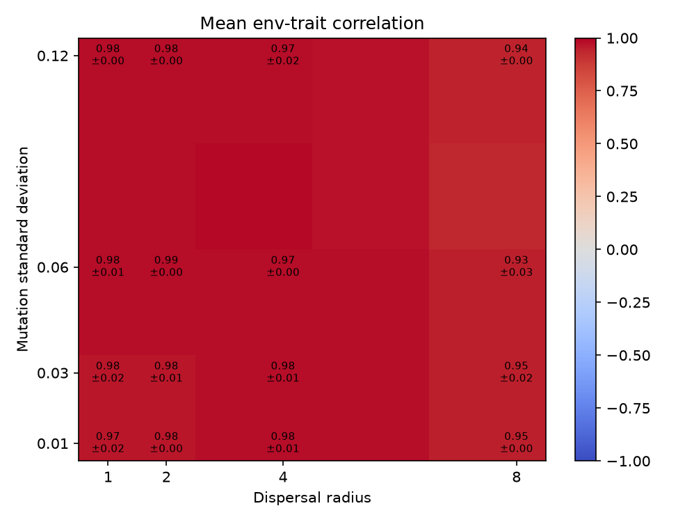
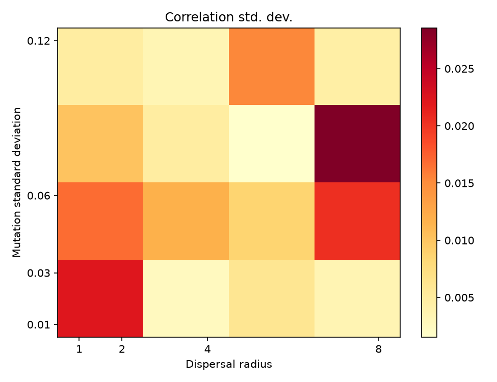
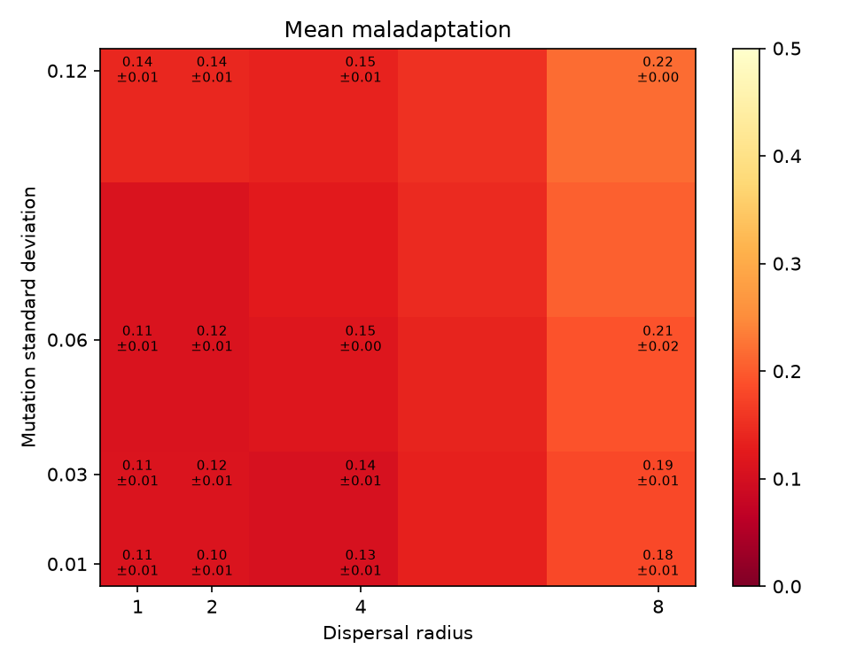
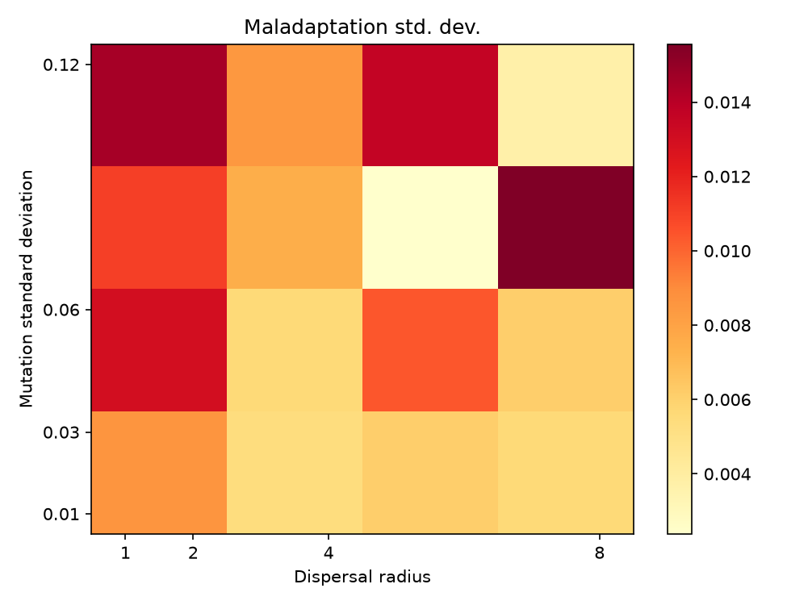
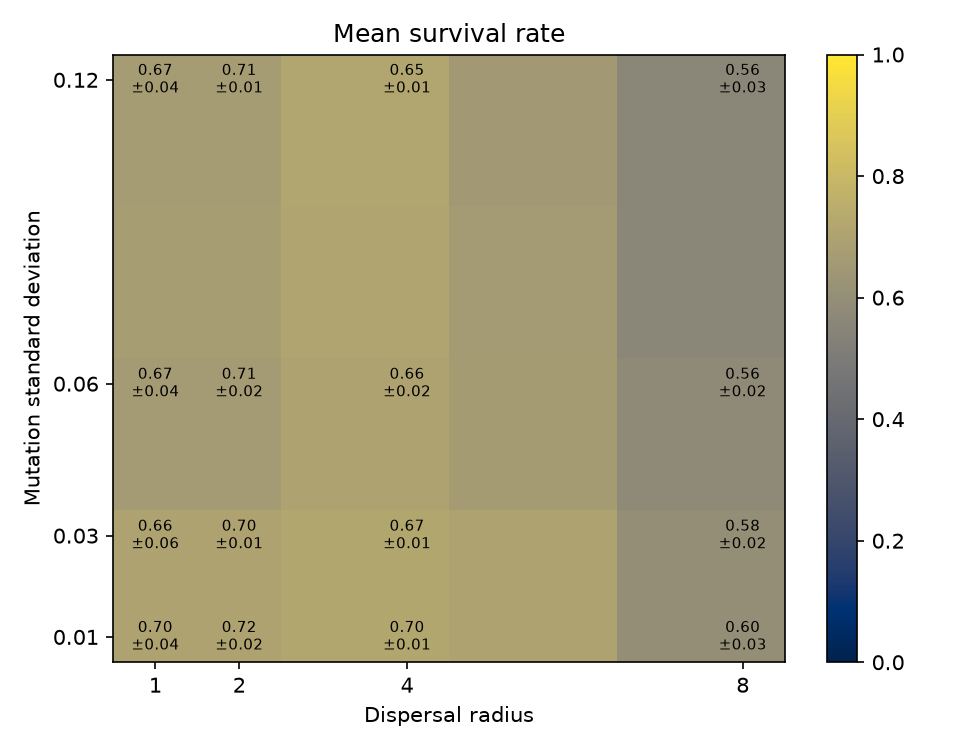
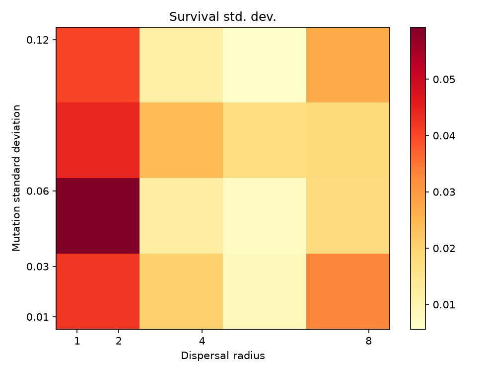
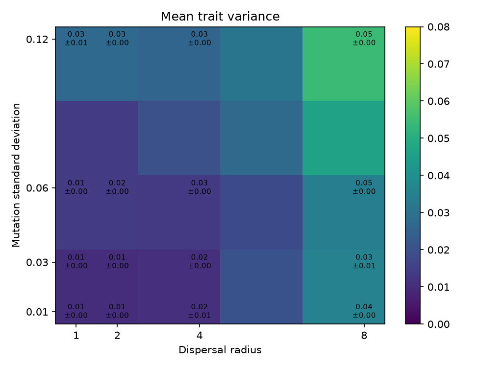
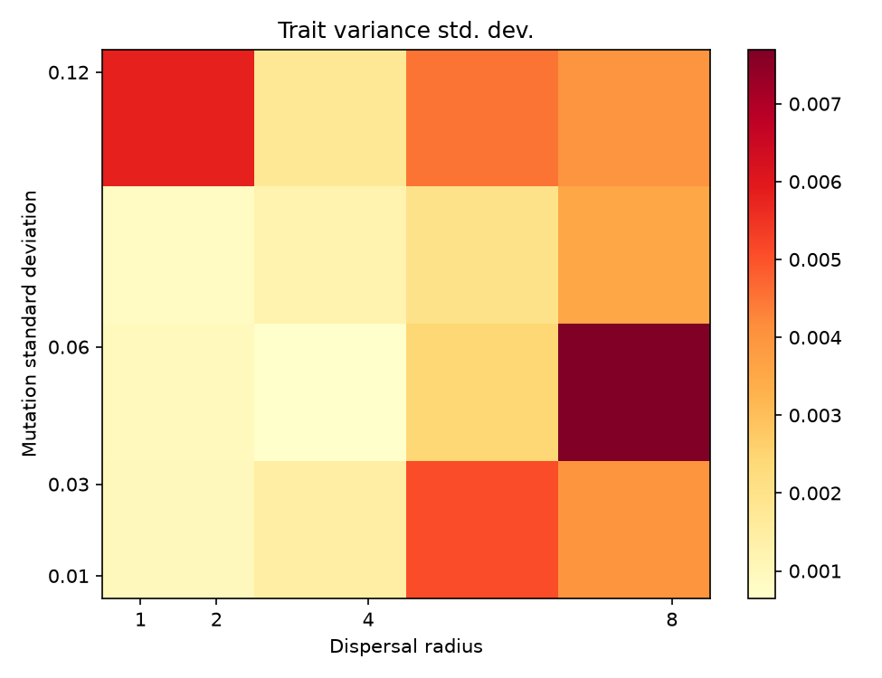
Cycle 09 Gene Flow Cline
Cycle 09: Gene Flow Along an Environmental Cline
Question
How does dispersal distance along a continuous environmental gradient alter the tension between local adaptation and gene flow? Do short dispersal distances let lineages track the gradient, while long dispersal distances erode local adaptation and blur lineage structure?
Model
40×40 grid with periodic vertical boundaries and reflective horizontal boundaries.
A fixed environmental gradient runs from 0 (left) to 1 (right).
Each individual carries a continuous phenotype `α ∈ [0,1]` and a neutral lineage marker (`ancestor_id`).
Fitness of a parent is `exp(−(α − env)² / (2σ²))` with `σ = 0.2`.
Better-adapted parents win contested empty cells; reproduction is local within a Manhattan-distance `d` neighborhood.
Offspring inherit the parent's `α` plus Gaussian mutation (`sd = 0.05`) and the parent's lineage marker; a small fraction of births create a new lineage marker (`rate = 0.005`).
Parameters
| Parameter | Value |
|-----------|-------|
| Grid | 40×40 |
| Generations | 300 |
| Death rate | 0.08 |
| Selection width σ | 0.2 |
| Mutation sd | 0.05 |
| Lineage mutation rate | 0.005 |
| Dispersal distances | 1, 2, 4, 8 |
| Replicates per distance | 10 |
Key results
| Dispersal | Trait-env correlation | Maladaptation | Trait variance | Lineage richness | F_ST proxy | Moran's I |
|-----------|----------------------:|--------------:|---------------:|-----------------:|-----------:|----------:|
| 1 | 0.995 ± 0.001 | 0.082 ± 0.004 | 0.011 ± 0.001 | 94.9 ± 10.6 | 0.017 ± 0.002 | 5.03 ± 0.51 |
| 2 | 0.996 ± 0.001 | 0.081 ± 0.004 | 0.010 ± 0.001 | 75.3 ± 5.1 | 0.023 ± 0.003 | 3.66 ± 0.65 |
| 4 | 0.995 ± 0.001 | 0.094 ± 0.004 | 0.014 ± 0.001 | 67.1 ± 6.3 | 0.026 ± 0.005 | 1.96 ± 0.30 |
| 8 | 0.989 ± 0.003 | 0.133 ± 0.005 | 0.027 ± 0.002 | 68.4 ± 6.2 | 0.022 ± 0.005 | 0.77 ± 0.27 |
Trait-environment correlation stays above 0.98 even at the largest dispersal, but maladaptation rises by more than 60% from `d=2` to `d=8`.
Longer dispersal increases within-column trait variance and reduces lineage spatial autocorrelation (Moran's I), showing that migrants homogenize local trait distributions.
Lineage richness is highest at very short dispersal (`d=1`) where drift creates many local lineages; it falls and then plateaus as mixing limits local divergence.
F_ST is low overall (≤ 0.03), indicating that even modest per-generation migration is enough to prevent strong neutral divergence across this gradient.
Interpretation
Selection along the gradient is strong enough to maintain a tight cline, but dispersal controls the *noise* around that cline. Short dispersal lets lineages become locally sorted; long dispersal imports mismatched alleles, inflating local variance and maladaptation without destroying the global cline. The result is a **migration–selection balance** with continuous local adaptation rather than discrete ecotypes.
Artifacts
`gene_flow_cline.py` — source code
`replicate_results.csv` — per-replicate metrics
`summary.csv` — mean ± std per dispersal
`trajectory.png` — time series of population, maladaptation, F_ST, and lineage richness
`final_state.png` — environment, phenotype, and lineage maps for one replicate per dispersal
`summary.png` — summary plots across dispersal distances
Next questions
1. How does the width of the environmental gradient (e.g., steep vs. shallow) shift the critical dispersal at which maladaptation becomes significant?
2. Does adding a temporal fluctuation in the gradient select for higher evolvability or broader reaction norms?
3. What happens if dispersal itself evolves rather than being fixed?
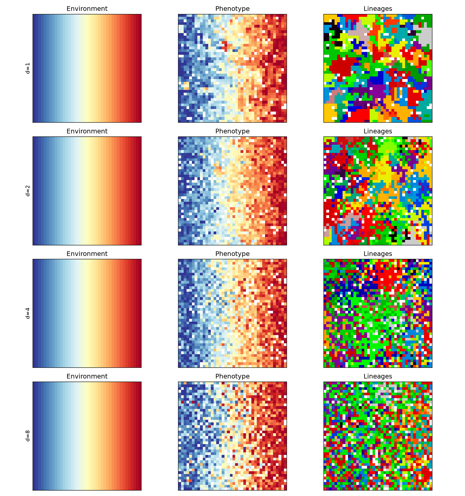
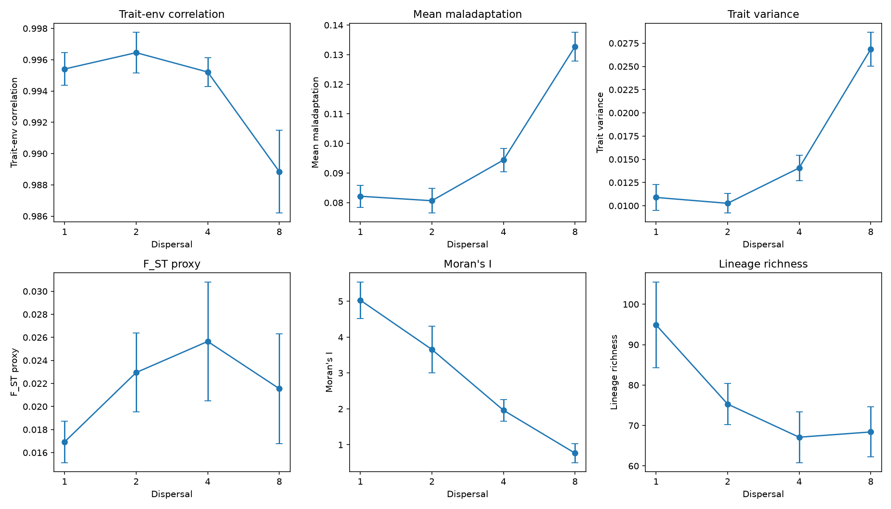
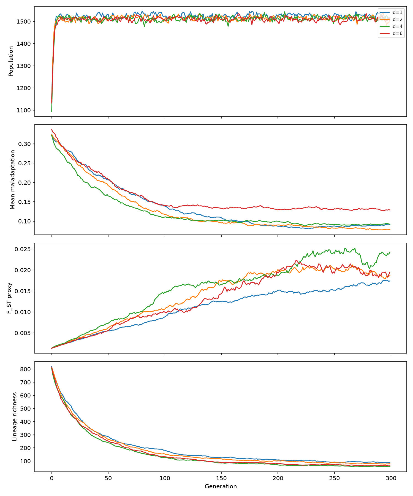